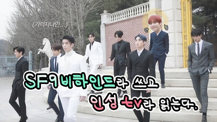
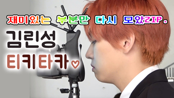

셒구모먼트 by 송주연
구독자 3500명
-
[SF9로운] 어쩌다 발견한 하루 로운 모음.zip 셒구모먼트 by 송주연 조회수 105,000회 · 5개월 전
-
[SF9인성] 셒구 메이킹 지분율99.9% 김론쏭씨 _거짓된남자, 프로 아무말러 인성이(대충 개그맨이라는 뜻) 셒구모먼트 by 송주연 조회수 81,000회 · 8개월 전
-
[SF9인성] 우슴보따리 린성이의 티키타카 _잘생긴 인성이 보고 하루 종일 웃을래 셒구모먼트 by 송주연 조회수 129,000회 · 8개월 전